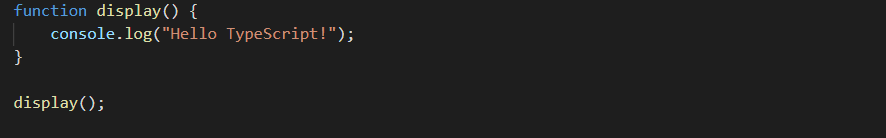
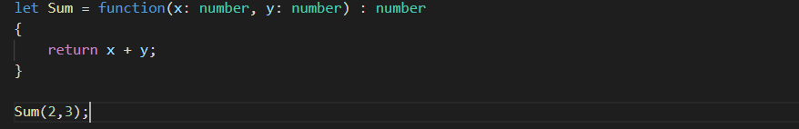

In TypeScript, functions can be of two types:
A named function is one where you declare and call a function by its given name.
Example:
An anonymous function can also include parameter types and return type.
Example:
An anonymous function is one which is defined as an expression. This expression is stored in a variable. So, the function itself does not have a name. These functions are invoked using the variable name that the function is stored in. An anonymous function can include parameter types and return type.
Optional parameters can be used when arguments need not be compulsorily passed for a function’s execution. A parameter can be marked optional by appending a question mark to its name. The optional parameter should be set as the last argument in a function.
Syntax:
function function_name (param1[:type], param2[:type], param3[:type])
Rest parameters don’t restrict the number of values that you can pass to a function. However, the values passed must all be of the same type. In other words, rest parameters act as placeholders for multiple arguments of the same type.
To declare a rest parameter, the parameter name is prefixed with three periods. Any nonrest parameter should come before the rest parameter.
Function parameters can also be assigned values by default. However, such parameters can also be explicitly passed values.
Syntax:
function function_name(param1[:type],param2[:type] = default_value) {
}
Recursion is a technique for iterating over an operation by having a function call to itself repeatedly until it arrives at a result. Recursion is best applied when you need to call the same function repeatedly with different parameters from within a loop.
Functions have the capability to operate differently on the basis of the input provided to them. In other words, a program can have multiple methods with the same name with different implementation. This mechanism is termed as Function Overloading. TypeScript provides support for function overloading.
Steps to overload function
Step 1 − Declare multiple functions with the same name but different function signature. Function signature includes the following.
The data type of the parameter
function disp(string):void;
function disp(number):void;
The number of parameters
function disp(n1:number):void;
function disp(x:number,y:number):void;
The sequence of parameters
function disp(n1:number,s1:string):void;
function disp(s:string,n:number):void;